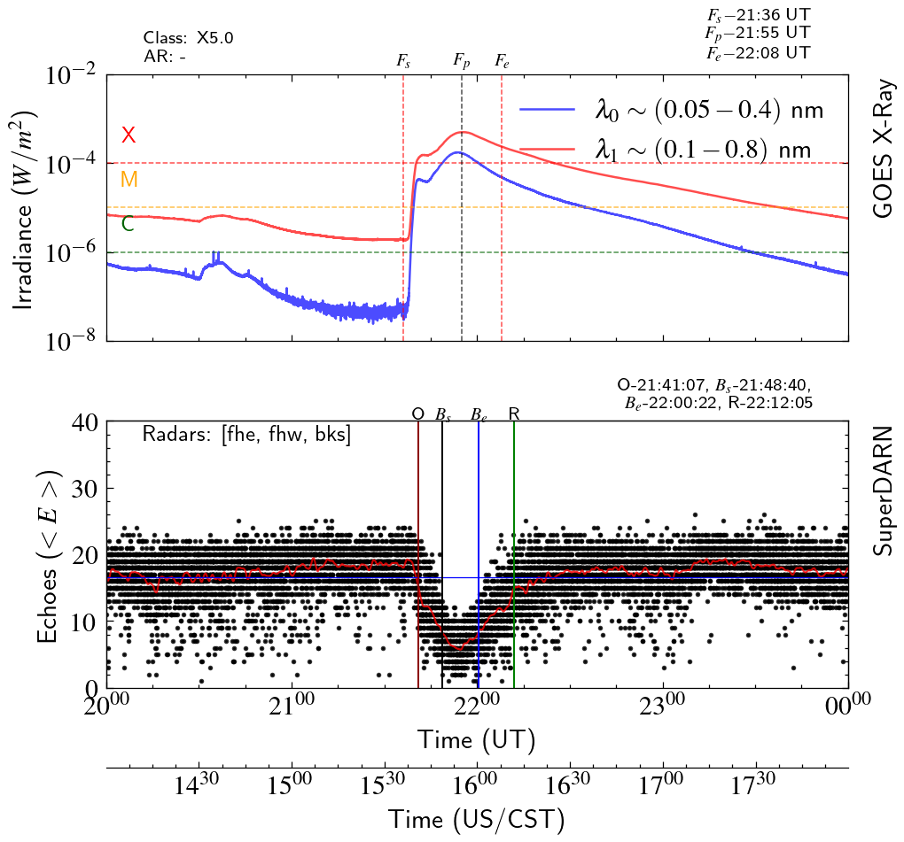
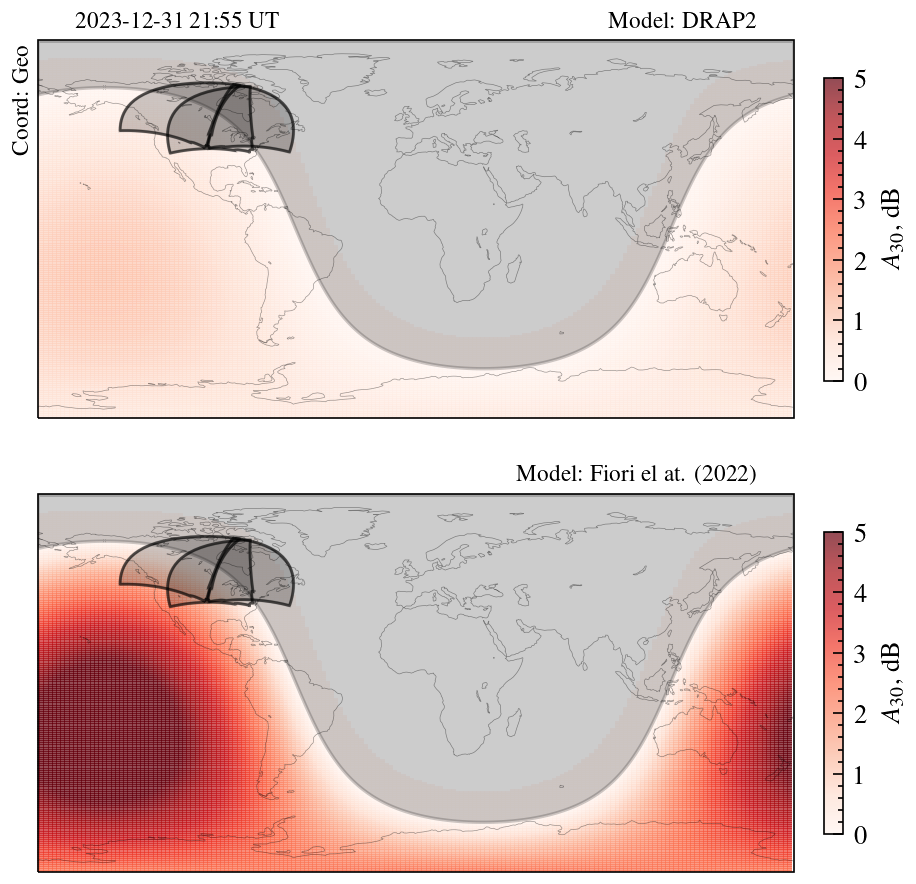

SWF Real-Time Monitoring Tool
Operational monitoring of flare-driven shortwave fadeout events across the North American SuperDARN HF radar network
Overview
The X-ray and Extreme Ultra Violet (EUV) radiation released during a solar X-ray flare induces electron density enhancement in the dayside D-region ionosphere. This increased electron density has the capacity to elevate absorption in the high frequency (HF: 3–30 MHz) range, specifically between 1 and 30 MHz. The consequence is a reduction in signal strength affecting shortwave radio transmissions — commonly known as shortwave fadeout (SWF).
This project introduces an operational facet of Short-Wave Fadeout (SWF) event monitoring, leveraging a subnetwork within the extensive North American SuperDARN HF radar network. The implemented monitoring tool serves as a valuable resource, offering a concise overview of the effects of solar flares on SuperDARN HF radar observations in the North American sector, with a particular focus on SWF.
Monitoring Capabilities
The monitoring tool functions as a comprehensive solution, generating summary reports of flare-driven SWF events. These reports encapsulate key insights into the impact of solar flares on HF propagation conditions, providing an in-depth understanding of the dynamics during the SWF events. Additionally, the tool incorporates modeled HF absorption maps, offering a visual representation of HF conditions precisely during the zenith of the flare.

Fig 1. A time series of X-ray irradiance from the GOES satellite. Flare start, peak, and end times are identified by Fs, Fp, and Fe respectively. Flare class and solar active region (flare source) is also mentioned in top left corner. The bottom panel features a time series of SuperDARN ground scatter from BKS/FHE/FHW radars. Onset, blackout start, end and recovery times are identified by O, Bs, Be, and R respectively.

Fig 2. Visual representation of the output from the DRAP (D-Region Absorption Prediction) model and Fiori et al.'s model, respectively, during the peak of a solar flare event on 21:55 UT, 31 December 2023.
Significance
By emphasizing SWF and its implications on HF radar observations, this operational tool becomes an indispensable asset for researchers and professionals in the space weather domain. It not only facilitates real-time monitoring but also aids in post-event analysis, contributing significantly to our comprehension of space weather phenomena and their effects on HF communication. The combination of summary reports and modeled absorption maps elevates the tool's utility, enabling a nuanced exploration of SWF events and their consequences within the North American SuperDARN HF radar network.
This tool directly builds on the anomaly detection algorithms developed in the SWF Detection project, translating research-grade detection methods into an operational monitoring capability.